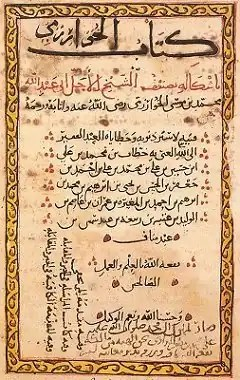
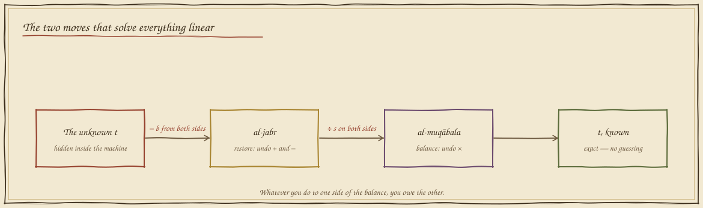
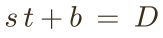
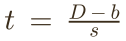

The Unknown (al-jabr)
In which a rover keeps crashing into a wall it can see perfectly well, and a Baghdad scholar's book about inheritance law stops it — exactly — twelve hundred years later.
Guess the turns, hit the wall
The wall is 487 mm away. Every motor turn moves the rover exactly 62 mm. You get one number: how many turns? Whole turns, obviously — who has ever heard of part of a guess?
Seven turns leaves you 53 mm short. Eight turns is a crash. The true answer — 487 ÷ 62 = 7.855 turns — was never on your slider, and no amount of guessing puts it there. The number you need is hiding inside the situation, wearing the wall and the wheel as a disguise. Mathematics has a name for a number in hiding: the unknown. And there is a machine for un-hiding it.
The restoration
Al-jabr means "the restoration" — the setting of a broken thing. Its author wasn't chasing robots; he was settling inheritances, where the unknown was someone's rightful share and getting it wrong wronged a family. Exactness was an ethical duty before it was an engineering one.



An equation is a balance scale
Write the crash problem honestly. The rover's nose starts 13 mm out from the start line; each of t turns adds 62 mm; the wall stands at 500 mm. On the left pan, the journey; on the right pan, the wall:


Solve, then drive
New wall, new wheel, new starting offset — the numbers change every round, the method never does. Work the two moves; the panel writes each line as you go. When t is alone, press drive: the rover executes your solution, fractional turns and all.
The rover stops with its nose a coat of paint from the brick — every time, any wall. Notice what you did not do: you never guessed, never nudged, never "tried again." Al-Khwārizmī's promise is that the two moves always finish. That promise — a method guaranteed to end with the answer — is the ancestor of every program you will ever write.
What you can now build
"How many turns until the wall" is the toy version of a question robots answer thousands of times a second: how much command produces the state I want? Motor controllers solve for voltages, flight computers for burn times, your 3-D printer for extruder steps — all of them un-hiding unknowns with al-jabr's two moves. And when the unknown hides inside two directions at once, you'll need the triangle waiting in Folio 04.
Field exercise: time your walk to school at a steady pace, then solve for the pace: distance = pace × time, so pace = distance ÷ time. Now predict tomorrow's time to a place you have never walked, from its map distance alone. You have just done model-based control — with your feet.
continue to folio 04 — rigid triangles return to the codex map